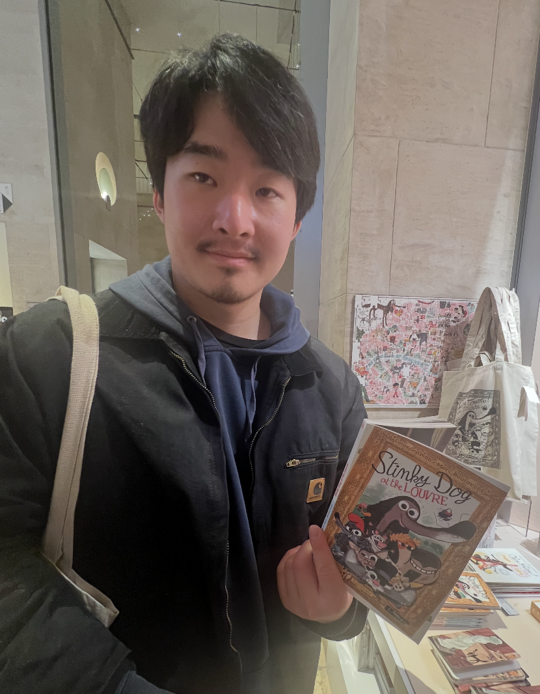

How to navigate:

Hello! I'm Andrew. I'm studying computer science at Stanford University. Above is a photo of me with a funny book I found at the Louvre.
A problem has been detected and your OS has been shut down to prevent damage to your computer.
ANDREW_WU
If this is the first time you've seen this Stop error screen, don't panic! This is actually Andrew Wu's portfolio website.
Technical information:
*** STOP: 0x000000FE (0xANDREW, 0xWU, 0x1S, 0xAWESOME)
*** developer.sys - Address ANDREW_WU Base at 0xC0FFEE
Press any key to return to the desktop...